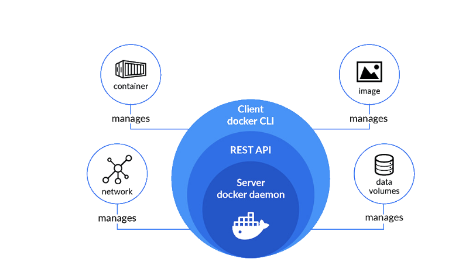
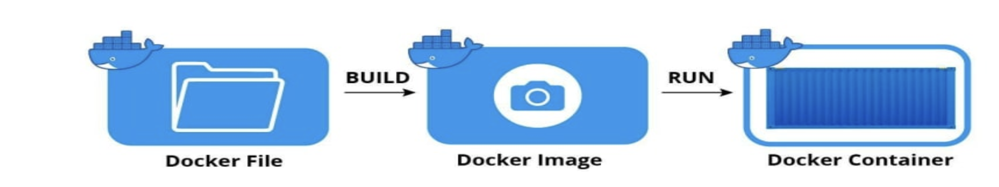

What is Docker ?
Docker is an open source platform that enables developers to build, deploy, run, update and
manage containers—standardized, executable components that combine application source
code with the operating system (OS) libraries and dependencies required to run that code in
any environment.
Docker terminologies :
Images: The blueprints of our application which form the basis of containers. These contain all of the configuration settings that define the isolated environment. Docker images contain executable application source code as well as all the tools, libraries and dependencies that the application code needs to run as a container. When you run the Docker image, it becomes one instance (or multiple instances) of the container.
Multiple Docker images can be created from a single base image Docker images are made up of layers and each layer corresponds to a version of the image. Whenever a developer makes changes to the image, a new top layer is created and this top layer replaces the previous top layer as the current version of the image. Previous layers are saved for rollbacks or to be re-used in other projects.
Each time a container is created from a Docker image, yet another new layer called the container layer is created. Changes made to the container—such as the addition or deletion of files—are saved to the container layer and exist only while the container is running.
This iterative image-creation process enables increased overall efficiency since multiple live container instances can run from just a single base image and when they do so, they leverage a common stack.
Containers: Are instances of a Docker image and are what run the actual application.A Docker container image is a lightweight, standalone, executable package of software that includes everything needed to run an application: code, runtime, system tools, system libraries and settings.
Container images become containers at runtime and in the case of Docker containers – images become containers when they run on Docker Engine.
Docker Daemon: That background service running on the host that listens to API calls (via the Docker client), manages images and building, running and distributing containers. The Deamon is the process that runs in the operating system which the client talks to – playing the role of the broker.
Docker daemon is a service that creates and manages Docker images, using the commands from the client. Essentially the Docker daemon serves as the control center of your Docker implementation. The server on which Docker daemon runs is called the Docker host
Docker Client:
Docker CLI is the most commonly used tool. It is the command-line interface used to control the Docker service. The Docker CLI enables you to interact with the system. To do this, we can use the Docker command, which will allow us to send and receive messages from the Docker daemon. The Docker command executes commands, creates images and networks, starts and stops containers, and more.
The Docker CLI receives commands, checks to ensure they are correctly formatted, and then turns them into a REST API call. The Docker daemon listens for requests from Docker
CLI and processes them according to its configuration. It is responsible for executing commands, processing requests, monitoring how containers run, mounting volumes, starting and stopping containers, and more.
The Docker client and daemon can both run on the same device. Alternatively, you can connect a Docker client to a remote Docker daemon. It allows you to manage a remote machine’s Docker system. After all, the Docker client and daemon communicate with each other using a REST API over UNIX sockets or a network interface.
Docker Hub: A registry of Docker images containing all available Docker images. A user can have their own registry, from which they can pull images.
Virtual Machines VS Containers :
A virtual machine (VM) is another way of creating an isolated environment. A VM is effectively an individual computer that lives inside a host machine; multiple VMs can live inside a single host machine. VMs are created by virtualising the host machine’s underlying hardware (processing, memory and disk). The hardware is virtualised and split up, with a piece representing a portion of the underlying physical hardware, which a VM can be run on.

Use Case: Running a Node.js Application in Docker
-
Install Docker: Ensure Docker is installed and the Docker Daemon is running on your machine.
-
Create a Simple Node.js App:
-
File:
app.jsconst http = require("http"); const port = 3000; const server = http.createServer((req, res) => { res.writeHead(200, { "Content-Type": "text/plain" }); res.end("Hello from Docker!\n"); }); server.listen(port, () => { console.log(`Server running at http://localhost:${port}/`); });
File:
package.json{ "name": "docker-node-example", "version": "1.0.0", "main": "app.js", "scripts": { "start": "node app.js" }, "dependencies": {} } -
-
Create a
Dockerfile:FROM node:16 # Set the working directory WORKDIR /app # Copy app files to the container COPY . . # Install dependencies RUN npm install # Expose the application port EXPOSE 3000 # Command to run the application CMD ["npm", "start"] -
Build and Run the Application:
-
Build the image:
docker build -t node-docker-example -
Run the container:
docker run -d -p 3000:3000 node-docker-example
-
Docker Daemon’s Role in This Example
- Image Build (
docker build):- The CLI sends the
buildrequest to the Docker Daemon. - The daemon reads the
Dockerfile, pulls the required base image (node:16), and creates the new imagenode-docker-example.
- The CLI sends the
- Container Start (
docker run):- The CLI sends the
runrequest to the Docker Daemon. - The daemon uses the
node-docker-exampleimage to create and start a container. - It maps port
3000of the container to port3000on the host machine.
- The CLI sends the
- Networking:
- The daemon sets up a bridge network for the container to communicate with the host.
- Monitoring:
- The daemon continuously monitors the container’s state and manages its lifecycle (e.g., restarting it if needed).
Useful Commands to Observe Docker Daemon in Action
-
List Running Containers:
docker psDisplays all active containers managed by the Docker Daemon.
-
Inspect Container Logs:
docker logs <container-id> -
View Daemon Logs (Linux):
sudo journalctl -u docker -
Check Daemon Status:
systemctl status docker
UNIX socket
unix socket is used to communicate with process running on the same machine
ref:
What is the difference between Unix sockets and TCP/IP sockets?
docker deamon create the bridge network between the host and the container
In the context of Docker, the host refers to the physical or virtual machine on which the Docker Daemon is running. This could be:
- Your Local Machine:
- If you are running Docker on your laptop or desktop, the host is your personal computer.
- A Cloud Instance:
- If you are using a cloud service like AWS, Google Cloud, or Azure to run Docker, the host is the virtual machine instance in the cloud.
- A Server:
- In a production environment, the host might be a dedicated server or a virtual server within a data center.
Bridge Network in Docker
When Docker sets up a bridge network, it allows containers to communicate with each other and the host machine. Here’s how the relationship works:
- The Docker Daemon creates a virtual network interface (usually named
docker0) on the host machine. This acts as a bridge between the host and containers. - Containers attached to the bridge network can communicate:
- With each other using private IP addresses assigned by Docker.
- With the host via the
docker0interface.
Examples
Scenario 1: Local Machine as the Host
-
You run a Node.js app in a container with:
bash Copy code docker run -d -p 3000:3000 node-docker-example -
The host is your local machine.
-
When you access
http://localhost:3000in your browser, you are connecting to the host (your computer), which forwards the request to the container through the bridge network.
Scenario 2: Cloud Instance as the Host
-
You deploy a Dockerized Node.js app to an AWS EC2 instance:
bash Copy code docker run -d -p 3000:3000 node-docker-example -
The host is the EC2 instance.
-
When you access
http://<EC2-public-IP>:3000, you are connecting to the host (the EC2 instance), which forwards the request to the container.
Docker Registry
There is two type of registry one public registry and another one is private registry , public registry means docker hub itself where the organization register their images publicly like redis , ngnix and rabbitmq etc
In private registry we cannot run the image directly , to run the image we want to authenticate and run the image , some of the image registry platforms are AWS ECR (Elastic Container Registry) , Google Container Register , Azure Container Registry and docker hub etc
Docker File :
Docker builds images automatically by reading the instructions from a Dockerfile.
It is a text file without any .txt extensions that contains all commands in order,
needed to build a given image.
It is always named *Dockerfile*.

Docker image consists of read-only layers each of which represents a Dockerfile instruction. The layers are stacked and each one is created by the change from the previous layer. For example, if I create a base layer of ubuntu and then in second instruction I install Python it will create a second layer. Likewise, if I do any changes by the instructions(RUN , COPY , ADD) it will create a new layer in that image. Containers are read-write layers that are created by docker images.
In simple words, a Dockerfile is a set of instructions that creates a stacked-layer for each instruction that collectively makes an image(which is a prototype or template for containers)
Steps to create docker file to create image
-
choose the base image , eg: if your application is a node application then choose the any version of the node image and make it as the base image .
FROMcommand defines the base image and the container is built on top of the base imageFROM [image_name]:[version] FROM node: alpine // this defines the base image of the container -
Next to run the code we want to copy the code and move to our container folder for that we want to use the
COPYcommandCOPY source destCOPY package.json /app/ COPY src /app/ -
To run the application first we want to download the package for that we want to run npm i to execute the command we
RUNcommand -
To go to the correct directory to run the application , want to use the
WORKDIRcommand to execute -
To Run the application or to start the application we want to use the
CMDcommand for start the docker container
Each RUN command in a Dockerfile creates a new image layer to enable a modular, efficient, and flexible way of building and maintaining Docker images. Here’s a detailed explanation:
1. What are Image Layers?
- Definition: Docker images are built in layers. Each layer represents a set of filesystem changes (like adding files, running commands, or modifying configurations).
- Stacking Layers: When you build an image, Docker stacks these layers on top of a base image.
2. Why Does Each RUN Command Create a New Layer?
a. Modularity
- Each
RUNcommand isolates changes made by that step. - This modularity allows Docker to manage and reuse layers efficiently.
- Example: If a later layer changes, Docker can rebuild only that layer and subsequent layers, leaving unchanged layers intact.
b. Layer Caching
- Layers are cached to improve build performance. If the content of a layer hasn’t changed, Docker reuses it rather than recreating it.
- Example: If you install dependencies with
RUN apt-get install, Docker will cache this layer. If no changes are made to this step, it won’t rerun on subsequent builds.
- Example: If you install dependencies with
c. Fault Isolation
- If a step in the Dockerfile fails, only that specific layer and subsequent ones need to be rebuilt, not the entire image.
- This makes debugging faster and more manageable.
d. Layer Sharing
- Docker uses layers as a way to optimize disk usage.
- If multiple images share the same base layers, Docker stores these layers once and reuses them across images.
3. Purpose of New Layers for Each RUN
Creating a new layer for each RUN command provides:
- Efficiency:
- Speeds up builds by leveraging cached layers.
- Reduces storage requirements since layers are reused across images.
- Flexibility:
- Modular layers make it easier to modify and debug specific parts of the Dockerfile without rebuilding the entire image.
- Version Control:
- Layers act as checkpoints during the build process, enabling better control over the build process.
4. How It Works in Practice
Example 1: Modular Build Process
Dockerfile
FROM ubuntu:latest
RUN apt-get update
RUN apt-get install -y curl
RUN echo "Hello, Docker!"
- Each
RUNcommand creates a new layer:apt-get update(Layer 1)apt-get install curl(Layer 2)echo "Hello, Docker!"(Layer 3)
If you modify RUN echo "Hello, Docker!", Docker rebuilds only Layer 3 and any dependent layers.
Example 2: Efficient Caching
Dockerfile
Copy code
RUN apt-get update && apt-get install -y curl
- Combining commands into a single
RUNreduces the number of layers, improving efficiency. - Use it when the commands are logically related.
5. Best Practices for Docker Layers
-
Minimize Layers: Combine commands to reduce the number of layers.
-
Order Commands Wisely: Place frequently changing steps later in the Dockerfile to maximize caching.
-
Clean Up: Remove temporary files within the same
RUNcommand to avoid bloating the image.Dockerfile Copy code RUN apt-get update && apt-get install -y curl && rm -rf /var/lib/apt/lists/*
By understanding why each RUN command creates a new layer, you can build efficient, reusable, and maintainable Docker images.
Note:
- every time when you run the docker container , will create a new instance of the image , it doesn’t reuse the old container , but when you execute the command
docker psit only display the active container, to view the container which we created before want to use the-a
Docker Commands
- List the docker images -
docker image - List the active docker container -
docker ps - download the image -
docker pull [image _Name]:[VERSION]→ will download the image locally , this will pull the image directly from the docker hub , docker hub is likenpmregistry - how to run the container →
docker run [image name]: versionthe above command will run the image or run the container which will show the logs of the container which will block the terminal you won’t be able to run any other command , if you want to run the command you only be able to do it in another tab, for non blocking container execution add a option -d in the above command
docker run -d [image_name][version] - where d for detach but in this command you wont see any logs , if we want to see the logs the of that container execute this command
docker log [docker_id]
5. stop the container - docker stop [container_id]
6. port binding - docker run -d -p [host_port]:[container_port] [image_name]: [version_name] it always good to bind the same port as the container port
7. start the container - docker start [docker_id]
difference btw docker start and docker run is docker run create a new instance of the image and execute where as the docker start will restart the already existed container
8. we can also give the custom name to the container for that we want to use the —name flag while running the container docker run —name [name] -d [image_name]:[version] so we can start , stop and get the log we if runs the command -d flag with name which we have given while running the docker instead of docker_id
9. CMD - cmd command is used execute when the container runs we can also override the default command by specifying the params in CMD command
10. ENTRYPOINT:
- Purpose: Defines a command that always runs when the container starts.
- Usage: Used for containers with a specific task or application (e.g., running scripts, services).
- When It Runs: At runtime and cannot be fully overridden (but arguments can be added).
- Effect: Always executes the specified command as the primary process of the container.
- build command for building image - docker build -t [imageName]:[version] [locatlion of the dockerfile]
- Usually docker doesn’t remove the unused container , unless we manually specify the prune command
reference:
Docker Best Practices: Choosing Between RUN, CMD, and ENTRYPOINT | Docker
prune: